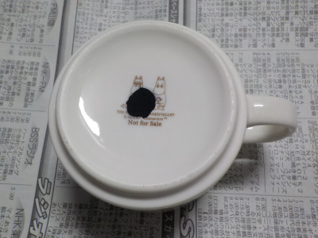
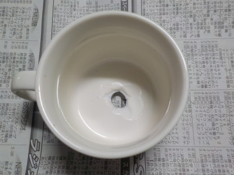
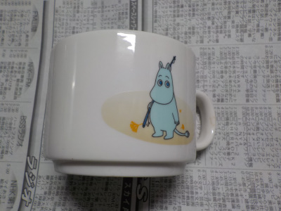

カナヅチでコップに穴を開けて鉢にしました。
2019/11/24
ドリルを使わないで簡単に穴を開ける方法がネットにあったのでやってみました。
1.新聞紙1日分を折ってクッションを作ります。
2.コップの底の内側と外側にカムテープを貼ります。
3.新聞紙の上にコップをひっくり返して置き、カナヅチの尖った方でコップの底をコンコン5分くらい叩きます。
叩いているとヒビが入って穴が開きます。
5分経って穴が開かなかったら、叩く力を少しづつ強くしてみてください。
ガムテープが貼ってあるので、器の破片が飛び散らなくていいです。

実際に開いた穴はこちらです。綺麗な円ではありませんが、見えないのでいいです。

上から見るとこんな感じ。

何かの景品でもらったムーミンの小さいカップです。デザート用かな？
使うことがなく捨てようかと思っていたんですが、植木鉢として利用出来そうです。